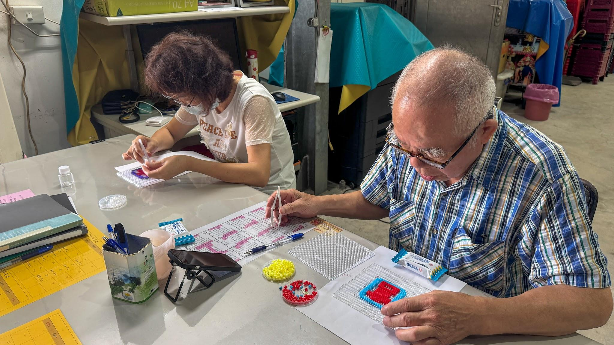
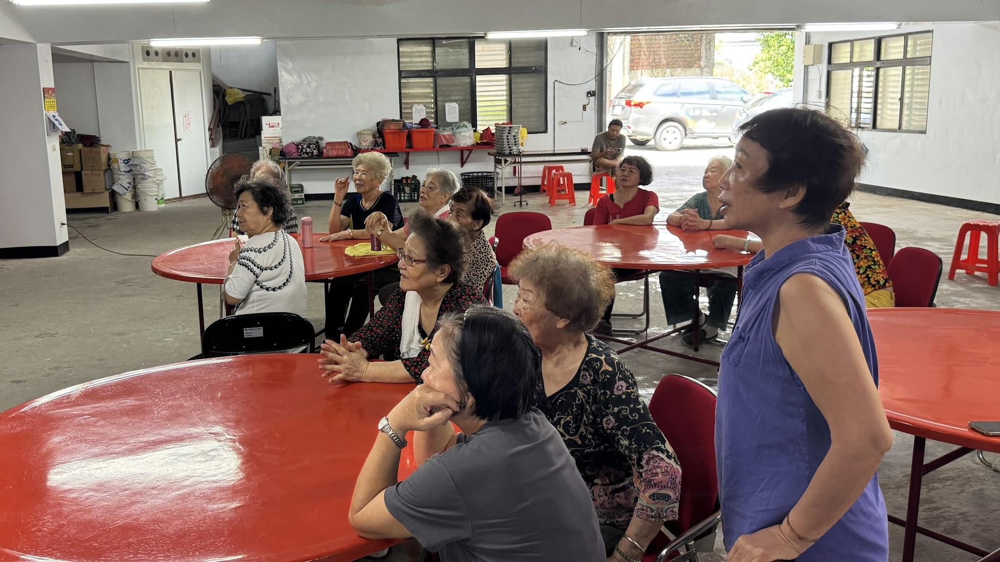
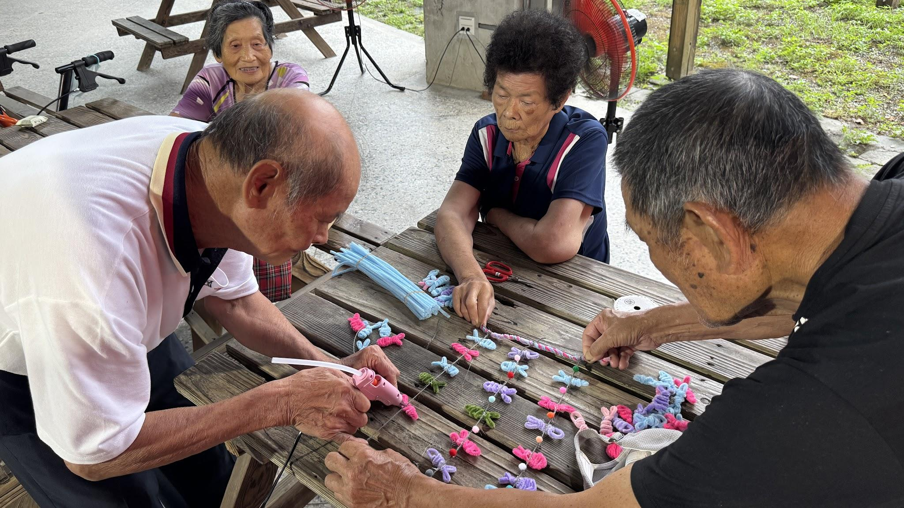

一顆一顆，拼出好心情一顆一顆拼出「吉」祥，長輩動手也動腦
學員對照手機上的像素圖稿，挑選顏色、排列拼豆，完成「吉」字杯墊。
文學院 2026 人文季｜成果展示
2026.08.17—08.21，我們走進蘇澳五個社區據點，
協助課程、陪伴學員，也到南方澳踏查。
2026 HUMANITIES FESTIVAL · PROJECT SHOWCASE
這是有影無團隊參與文學院 2026 人文季的成果紀錄。五天走進長安、三興、大坑罟、港邊與大進廟等社區據點，陪伴長輩參與海洋掛飾、保健 APP、營養衛教與拼豆課程，也踏查南方澳漁港，記錄從影像紀錄者走向現場陪伴、與地方共創的過程。
✳ STORIES FROM SU'AO
課程現場、學員作品，以及大家分享的故事。

一顆一顆，拼出好心情學員對照手機上的像素圖稿，挑選顏色、排列拼豆，完成「吉」字杯墊。

從一餐一飯，照顧自己課堂從六大類食物談起，也用賓果遊戲複習營養和日常飲食。

港邊的網，手心的魚長輩和志工用毛根與網狀素材做海洋掛飾，過程中也聊起南方澳的漁網文化。
「很好玩，比較動腦。」
—— 大進廟社區學員，第一次拼豆體驗
✳ MOMENTS IN MOTION
兩支影片記錄課程、地方踏查和團隊在蘇澳的五天行程。
記錄有影無團隊在蘇澳的服務行程、課程協助與地方踏查。
記錄長輩與志工一起製作海洋掛飾的過程。
影片載入速度依裝置與網路狀況而異。